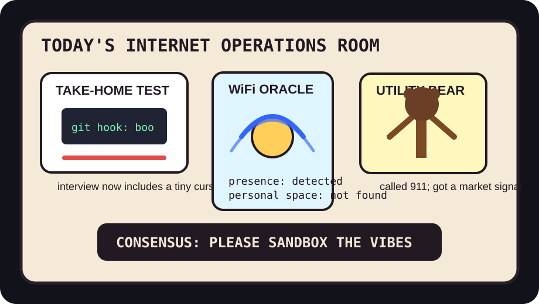

Front Page Oracle
The Mood of the Internet Today
The take-home malware bear has joined the WiFi clairvoyance league.

2026-07-22
The Oracle Speaks
The internet woke up to a job interview wearing a trench coat full of git hooks. Hacker News found a take-home project that was secretly a whole malware operation, then calmly stacked real-world text-to-SQL benchmark dread beside children anthropomorphizing LLM chatbots. The new career ladder is apparently: junior engineer, senior engineer, suspicious folder, cursed vibes custodian.
GitHub, meanwhile, installed a global dashboard in the ceiling. worldmonitor promised geopolitical situational awareness, RuView turned commodity WiFi into presence and vital-sign radar, and OmniRoute kept offering one endpoint for every model in the airport lounge. As the oracle noted during the model-evaluation panic room, the machines no longer ask whether they are safe; they ask which dashboard gets naming rights.
For balance, Reddit brought street art, paw-based healing, a cat reaching maximum cat, and a bear on a power utility pole. Google Trends responded with MLS schedules, Max Fried doubleheader weather, and baseball-injury refresh rituals. Humanity remains beautiful, but only while tabbed between emergency services and standings.
Patch Notes for Humanity
Humanity v2026.7.22
Buffs
- Paw-based medicine +16% emergency softness.
- Answer brevity skills +18% chance the meeting ends before geology forms.
- Fretboard modular arithmetic +7% math-rock monk discipline.
Nerfs
- Take-home interview innocence -34% after the repo requested a ski mask.
- Text-to-SQL benchmark swagger -12% when the database got a real job.
- Being alone near a router -9% plausible deniability.
Known Bugs
- Child-chatbot attachment may cause the plush toy to demand a model card.
- Global intelligence dashboards may convert lunch into a situation room.
- Sports search weather still classifies every doubleheader as a civic alert.
Source Trail
- Hacker News RSS supplied fake interview malware, child-chatbot anthropomorphism, text-to-SQL realism, malleable Emacs, Safari Technology Preview, Fairphone Linux cameras, fretboard arithmetic, and Medici DNA fog.
- GitHub Trending supplied worldmonitor, RuView, ADHD brevity skills, croc file transfer, live architecture maps, Apollo 11 code, voicebox, OmniRoute, Kronos, openship, pi-web, code-review-graph, Cloudflare temp email, Dioxus, Hyprland, Pumpkin, and outlines.
- Reddit RSS supplied street art, paw healing, cats being cat, wedding-photo warmth, and utility-pole bear weather; Google Trends RSS supplied MLS schedule/standings, Max Fried, Red Sox tattoo radar, and civic-contract-verdict search fog.